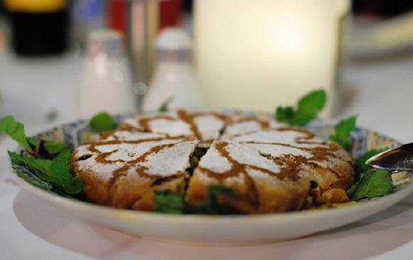
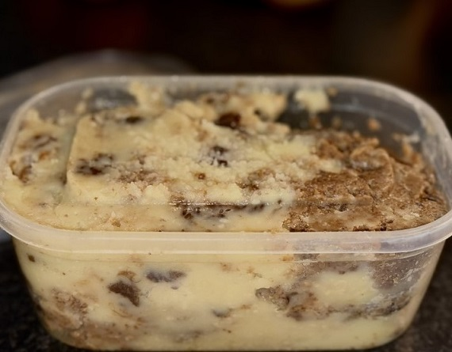
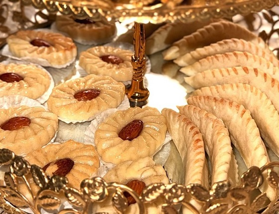

Découvrire les plats Emblématique de la ville de Fez et l'Atlas du Maroc
Fès : La capitale culturelle et culinaire du Maroc
Bastilla
La bastilla est l’un des plats les plus prestigieux de la cuisine marocaine, synonyme de festivité et de raffinement, particulièrement dans la région de Fès. Elle se présente sous forme d’une grande tourte faite de fines feuilles de pâte filo, appelées 'warqa'. Sa préparation demande une main experte, car chaque couche doit être soigneusement étalée pour obtenir une texture à la fois croustillante et légère. Traditionnellement, la farce de la bastilla est composée de pigeon, mais il est courant aujourd’hui d’utiliser du poulet. La viande est cuite à feu doux dans une sauce épaisse préparée avec des oignons, des épices (cannelle, gingembre, safran), et parfois des herbes fraîches. Les œufs battus sont ajoutés à cette préparation pour lui donner une consistance crémeuse. Une seconde couche est composée d’amandes grillées et hachées, mélangées à du sucre et à de la cannelle. Tout cela est superposé et enveloppé dans la pâte filo, puis saupoudré de sucre glace et décoré avec des motifs en cannelle.
La bastilla a été introduite au Maroc par les Andalous lors de leur exil au Moyen Âge, ce qui explique ses saveurs mêlant influences mauresques et méditerranéennes. Elle est préparée pour célébrer des mariages, des circoncisions et d'autres événements.
Khliaa
Le Khliaa est une technique ancestrale de conservation de la viande héritée des Amazighs, l'origine de cette technique est la conservation dans la graisse pour prolonger la durée de vie de la viande où il n’y avait pas de réfrigérationn, en particulier après l’Aïd al-Adha. . Sa préparation commence par la découpe de viande d’agneau ou de bœuf en fines lamelles. Ces morceaux sont ensuite marinés pendant plusieurs jours dans un mélange de sel, de graines de coriandre, de cumin moulu, et parfois de fenugrec. Après cette étape, la viande est exposée au soleil pour la faire sécher complètement.
Une fois séchée, la viande est conservée dans de la graisse animale, souvent dans des jarres en argile. Ce processus permet au khli3 de se conserver pendant plusieurs mois. Il est utilisé pour préparer des plats simples, comme des œufs brouillés (amlou), ou ajouté aux tajines pour leur donner plus de goût. À Fès, il est particulièrement apprécié pendant les périodes froides et les mois de Ramadan.
Kaab Ghzal ou Cornes de Gazelle
Les kaab ghzal ou cornes de gazelle sont des pâtisseries délicates et emblématiques de la cuisine marocaine, avec des origines profondément enracinées dans la ville de Fès. Elles tirent leur nom de leur forme courbée rappelant les cornes dun gazelle. Leur préparation commence par une pâte fine, souple et élastique, faite de farine, d’eau de fleur d’oranger, et d’un peu de beurre. La farce est constituée d’amandes blanchies et finement moulues, mélangées à du sucre glace, de la cannelle et de l’eau de fleur d’oranger pour obtenir une pâte d’amande homogène. Chaque pâtisserie est façonnée à la main avec soin, puis cuite jusqu’à obtenir une légère couleur dorée. Contrairement à d’autres douceurs marocaines, les kaab ghzal ne sont pas excessivement sucrées et mettent en avant les arômes naturels de la fleur d’oranger et des amandes. Ces pâtisseries sont servies lors des mariages, des fêtes religieuses, et des grandes réceptions.
Explorez la diversité des saveurs dans autres villes du Maroc
Tanger, Oujda, Marrakech, Ouarzazate et Laayoune
Bon voyage à travers les saveurs du Maroc !